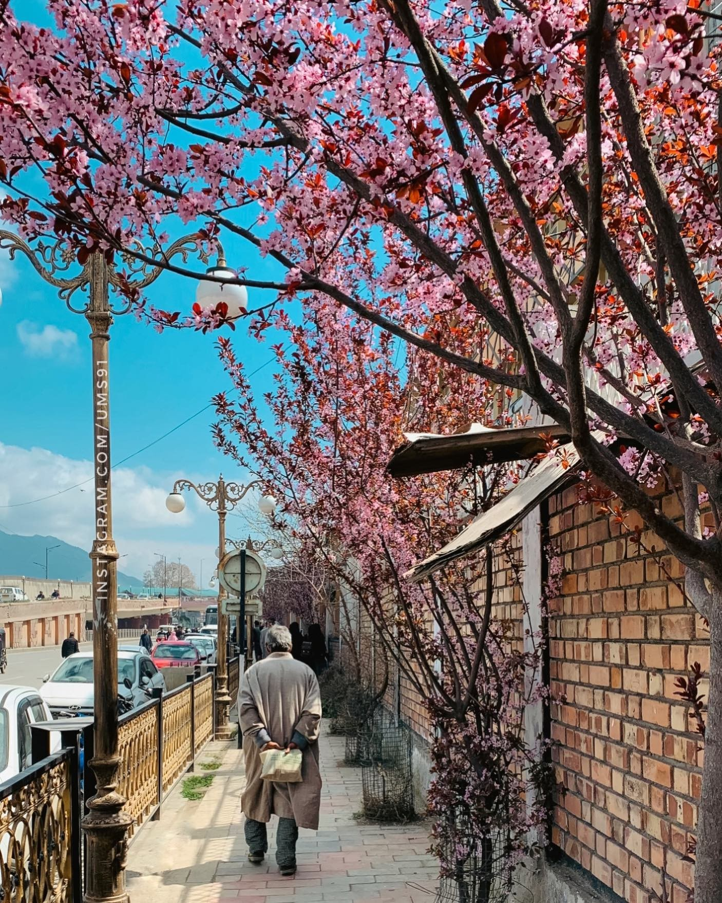

Blossom Walk
Pink blossoms lean over a quiet walkway, with old brick, ornate lamps and distant mountains creating a delicate meeting of city and spring.
Signed · Edition of 2512 × 16 in₹2,299
A photograph from the UMS91 archive · Kashmir / India

Pink blossoms lean over a quiet walkway, with old brick, ornate lamps and distant mountains creating a delicate meeting of city and spring.
A photograph from the UMS91 archive · Kashmir / India